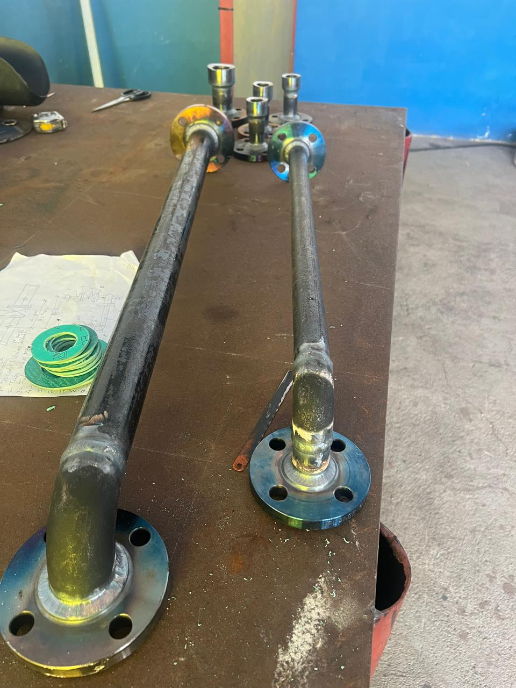
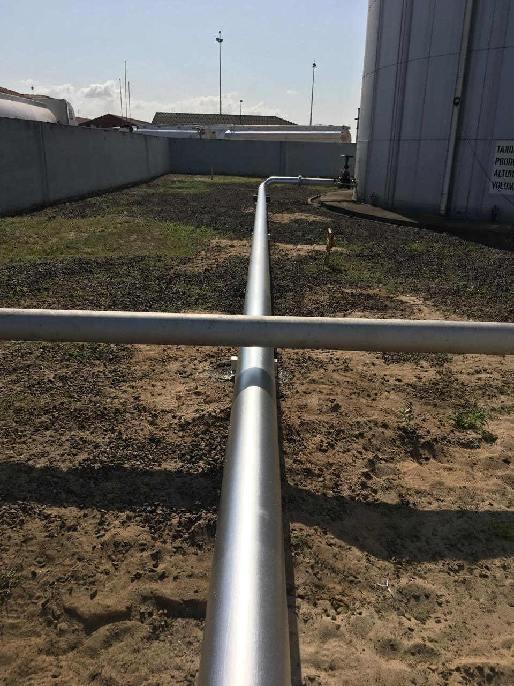
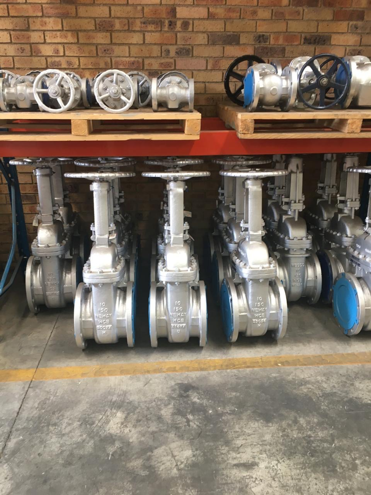
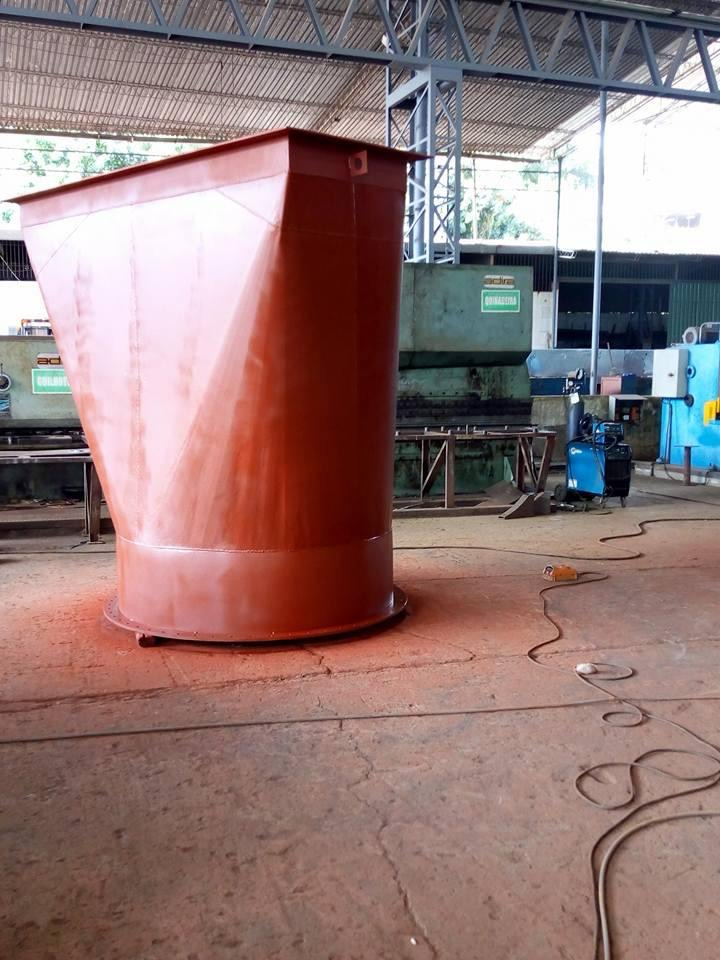
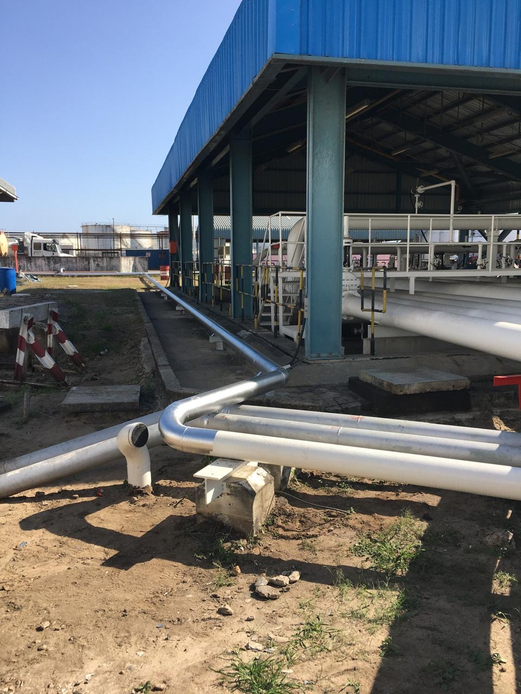
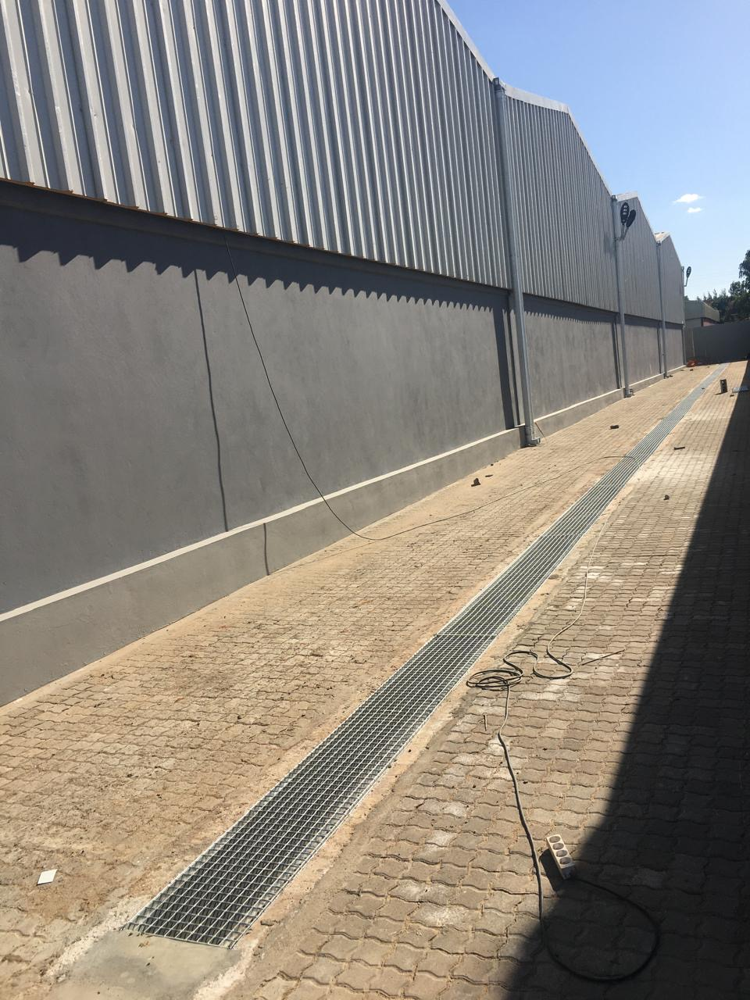
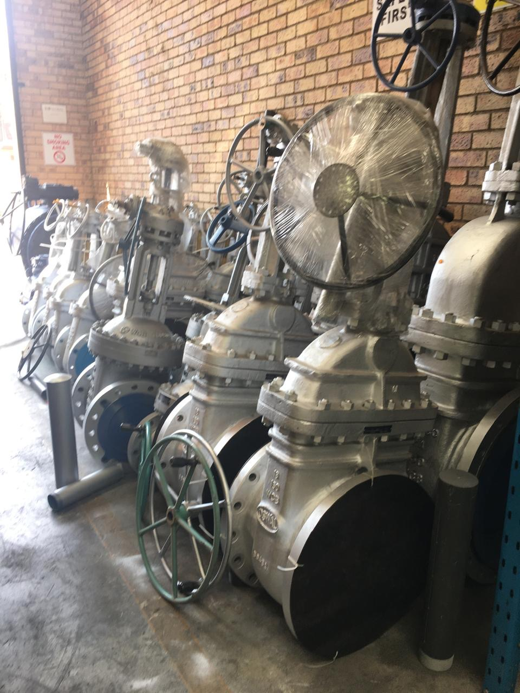

Engenharia industrial
Soluções técnicas para ambientes industriais e infraestruturas críticas.
Serviços técnicos e engenharia em Moçambique
Apoio técnico, manutenção e execução no terreno para ambientes industriais e infraestruturas.
O que fazemos
Apoiamos clientes de indústria, energia e infraestruturas com equipas multidisciplinares e execução orientada a requisitos, prazos e segurança.
Soluções técnicas para ambientes industriais e infraestruturas críticas.
Inspeção, intervenção e suporte à continuidade operacional.
Execução de obras civis, estruturas e melhorias de instalações.
Montagem, apoio e integração de sistemas elétricos.
Análise, recomendações e acompanhamento técnico especializado.
Planeamento, controlo, coordenação e entrega de projetos.
Como trabalhamos
Organizamos cada intervenção em etapas definidas para manter a comunicação clara, reduzir riscos e tornar as entregas mais previsíveis.
Converse sobre o seu projetoCompreender o local e o escopo.
Avaliar requisitos e condições.
Definir recursos, prazos e controlos.
Realizar o trabalho no terreno.
Verificar segurança e qualidade.
Concluir e comunicar os resultados.
Qualidade e segurança
O trabalho é orientado por especificações, requisitos do cliente e boas práticas, com atenção aos riscos e à verificação da execução.
Planeamento de risco, EPI, sinalização, procedimentos e controlo da zona de trabalho.
Inspeção visual, controlo dimensional, acabamento e verificação técnica.
Trabalho alinhado às especificações, aos requisitos do cliente e às boas práticas.
Aprendizagem operacional e padronização de processos repetíveis.
Experiência no terreno
Exemplos de trabalhos em tanques, tubagens e instalações industriais apresentados no perfil corporativo.
 01 / 10
01 / 10Fornecimento e montagem de vedantes para tetos flutuantes, reforçando a vedação e a segurança operacional.

02 / 10Desgaseificação e limpeza de tanques verticais, com decapagem e pintura de tubos.
 03 / 10
03 / 10Aplicação do sistema Denso Base Protection para proteger a zona crítica da base contra corrosão.
 04 / 10
04 / 10Reparação interna e pintura para renovar o acabamento técnico e a proteção da superfície.

05 / 10Registo de uma linha instalada no terreno e do seu alinhamento junto à estrutura.

06 / 10Componentes organizados para apoiar trabalhos técnicos em instalações industriais.

07 / 10Componente metálico em fase de preparação numa oficina industrial.

08 / 10Registo de uma estrutura de tubagens e elementos de instalação no local de obra.

09 / 10Vista exterior de uma canaleta e do pavimento junto a uma instalação industrial.

10 / 10Conjunto de bombas e válvulas instalado numa área operacional.
Sobre a Serviteng
Fundada em 2016 e sediada na Matola, a Serviteng apoia clientes industriais com serviços técnicos, manutenção, instalações e execução de projetos.
Referências institucionais
Marcas apresentadas no perfil corporativo da Serviteng.


Onde atuamos
Com sede na Matola, atendemos projetos no norte, centro e sul do país.
Obras públicas — 4.ª classe
Categoria Edifícios e Monumentos · Alvará válido até 25 de janeiro de 2027.
Nampula · Nacala Porto
Sofala · Beira · Porto da Beira
Maputo · Matola
Av. Fany Mpfume, n.º 979
Matola, Moçambique
Vamos conversar
Conte-nos do que precisa. A nossa equipa recebe o seu pedido pelo WhatsApp e dará seguimento consigo.